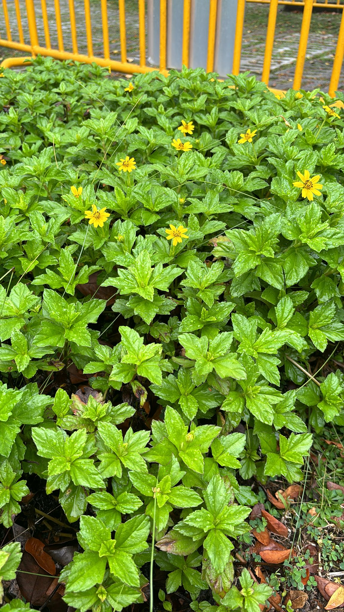

Bay Biscayne Creeping Oxeye
The Bay Biscane Creeping Oxeye, scientific name Sphagneticola trilobata, is a flowering plant native to Mexico, Central America, and the Caribbean, but now grows throughout the Neotropics. It is typically a ground cover plant, with daisy-like yellow flowers. Each flower head is up to 1.5" (3.5 cm) in diameter with numerous tiny yellow florets in the center and 8-13 yellow petal-like florets with toothed tips on the periphery.